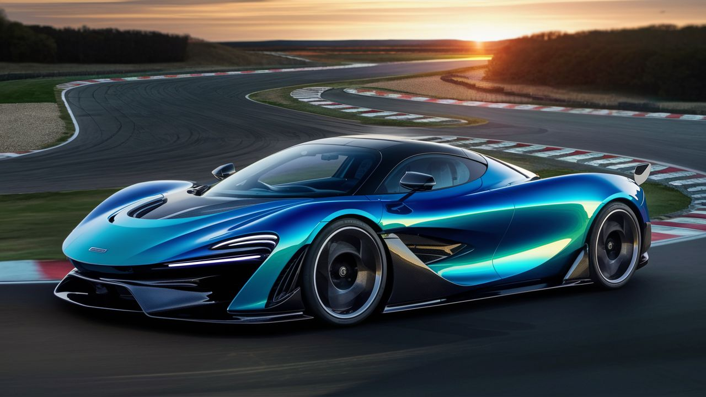
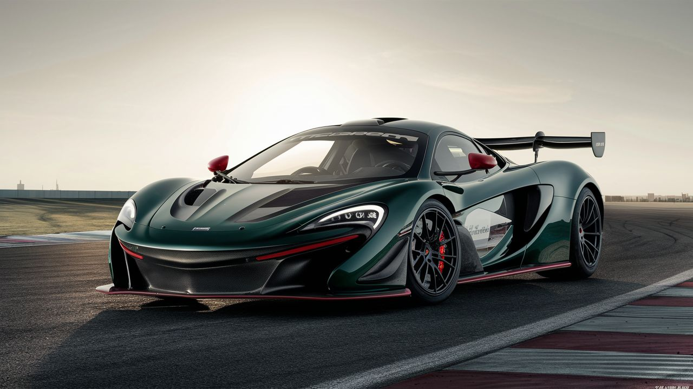
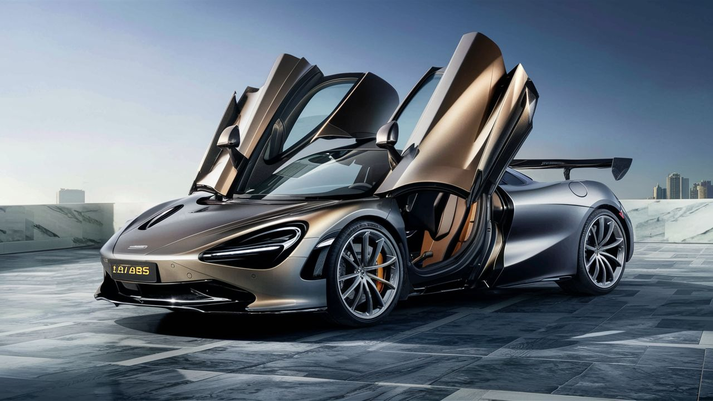

McLaren
McLaren es una escudería británica de automovilismo con sede en Woking, Inglaterra. Fundada como McLaren Racing Limited, es reconocida por su participación en competiciones como la Fórmula 1. Además, McLaren Automotive se destaca por la creación de automóviles de alto rendimiento utilizando tecnología y experiencia en carreras para desarrollar algunos de los coches más avanzados del mundo . En el ámbito automotriz, McLaren Automotive ha producido modelos emblemáticos como el McLaren Artura y el 765LT, que representan la excelencia en diseño y rendimiento. La marca se caracteriza por su enfoque en la innovación y la tecnología de vanguardia, heredada de su exitosa trayectoria en las pistas de carreras . Para aquellos interesados en adquirir vehículos McLaren en México, Mercado Libre ofrece una plataforma donde se pueden encontrar diversos modelos disponibles para la compra. Los automóviles McLaren son altamente valorados por su combinación de lujo, velocidad y diseño exclusivo, atrayendo a entusiastas que buscan experiencias únicas al volante
Modelos destacados
McLaren Speedtail

Motor: V8 de 4.0 litros Twin-Turbo con motor eléctrico Potencia: 1035 caballos de fuerza combinados Aceleración (0-300 km/h): Menos de 13 segundos Características: Hyper-GT, diseño aerodinámico, tecnología innovadora. Precio: Desde aproximadamente $2.25 millones USD.
McLaren P1
Motor: V8 de 3.8 litros Twin-Turbo con motor eléctrico Potencia: 903 caballos de fuerza combinados Aceleración (0-100 km/h): Menos de 3 segundos Características: Hypercar híbrido, diseño agresivo, tecnología de la Fórmula 1. Precio: Desde aproximadamente $1.15 millones USD.
McLaren 720S
Motor: V8 de 4.0 litros Twin-Turbo Potencia: 710 caballos de fuerza Aceleración (0-100 km/h): 2.8 segundos Características: Supercar deportivo, diseño distintivo, rendimiento excepcional. Precio: Desde aproximadamente $300,000 USD.